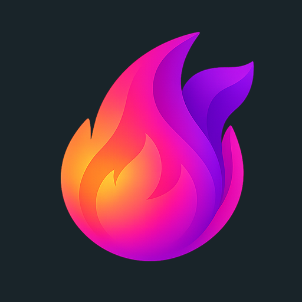

VERİYOTATYT, AYT ve genel kültür konularını eğlenceli, etkileşimli ve kısa içeriklerle öğren.
Matematik, Fen, Türkçe, Sosyal ve daha fazlası. Müfredatla uyumlu, seviye seviye ilerle.
Genel Yetenek ve Genel Kültür konularına özel testler, güncel bilgiler ve soru kalıplarıyla hedefine ulaş.
Sürükle-bırak, eşleştirme, sıralama ve daha birçok farklı soru tipiyle aktif öğren.
Genel kültür, tarih, bilim ve daha fazlasını kısa reels formatında keşfet.
Gerçek sınav formatında denemelerle kendini test et ve gelişimini takip et.
Veriyota olarak gizliliğine değer veriyoruz. Bu Gizlilik Politikası, Veriyota mobil uygulamasını (kısaca "Uygulama") kullanırken hangi bilgilerini topladığımızı, bunları neden ve nasıl işlediğimizi, kimlerle paylaştığımızı ve sahip olduğun hakları sade bir dille anlatır. Uygulamayı kullanmaya başladığında bu politikayı okumuş ve kabul etmiş sayılırsın.
Politika; Türkiye'de 6698 sayılı Kişisel Verilerin Korunması Kanunu (KVKK), Avrupa Birliği'nden uygulamayı kullananlar için Genel Veri Koruma Tüzüğü (GDPR) ile Apple App Store ve Google Play'in gizlilik gerekliliklerine uygun şekilde hazırlanmıştır.
Kişisel verilerinin işlenmesinden KVKK anlamında Veriyota (kısaca "biz") veri sorumlusu sıfatıyla sorumludur. Politikayla ilgili tüm soru, talep ve başvurularını şu adrese iletebilirsin:
E-posta: destek@veriyota.com
Uygulamayı kullandığında aşağıdaki verileri topluyoruz. Her verinin neden işlendiğini sonraki bölümlerde anlatıyoruz.
Kredi kartı numaranı, banka bilgilerini veya tam kart detaylarını asla görmüyor ve saklamıyoruz. Ödemeler Apple App Store veya Google Play üzerinden, RevenueCat aracılığıyla yönetilir.
Uygulamada iki yapay zeka özelliği vardır:
Bu içerikler önce Supabase Edge Functions sunucularımız üzerinden geçer, oradan Google Cloud üzerinde çalışan Gemini API'ye iletilir. Kişisel verilerini kalıcı eğitim verisi olarak kullanılmaması için Gemini API'nin gizlilik ayarları doğrultusunda istek atıyoruz. Kişisel bilgilerini (kimliğin, telefonun, banka bilgilerin gibi) bu özelliklere girmemeni öneririz.
Topladığımız verileri şu amaçlarla işliyoruz:
Supabase: Hesabın, ilerlemen ve uygulama içi tüm yapısal verilerin Avrupa Birliği bölgesinde bulunan Supabase sunucularında saklanır. Tüm bağlantı TLS ile şifrelenir; Row Level Security (RLS) kuralları sayesinde başka bir kullanıcı verilerine erişemez.
Cloudflare R2: Uygulama içi görseller Cloudflare R2 üzerinde barındırılır. R2 üzerinde kişisel verin tutulmaz.
Apple App Store ve Google Play Billing: Tüm abonelik ödemeleri ilgili mağazanın altyapısı üzerinden gerçekleşir. Kart bilgilerin doğrudan Apple veya Google'a verilir; biz bu bilgileri görmeyiz.
RevenueCat: Abonelik durumunu doğrulamak ve cihazlar arası senkronize etmek için RevenueCat kullanırız.
Google Cloud (Gemini API): Soru çözücüye yüklediğin fotoğraflar ve Viyo ile yaptığın sohbet mesajları, yanıt üretebilmesi için Gemini API'ye iletilir. Veriler TLS ile şifreli aktarılır.
Meta (Facebook): Reklam kimliği (iOS'ta ATT izni verdiysen IDFA, Android'de GAID), uygulama olayları ve parametreler iletilir. E-posta, telefon veya ad gönderilmez.
Apple SKAdNetwork (iOS): Anonim olarak indirme ölçümü yapar.
Google Sign-In & Apple Sign-In: Giriş işlemleri ilgili servislerin kendi gizlilik politikalarına tabidir.
Firebase (Google): Push bildirim iletimi (FCM) ve crash analizi için kullanılır.
iOS'ta onboarding sürecinde gösterilen izin penceresinde izin verirsen IDFA reklam ortaklarıyla paylaşılır. İzin vermezsen hiçbir kullanıcı düzeyinde takip yapılmaz. Ayarları istediğin zaman değiştirebilirsin.
6.1 18 Yaş Altı Kullanıcılar: 18 yaşından küçüklerin ebeveyn onayına sahip olduğu varsayılır. Veli talebiyle veriler silinebilir.
6.2 13 Yaş Altı Kullanıcılar: 13 yaş altı kullanıcı tespit edilirse hesabı askıya alınır ve veriler silinir.
6.3 Reklam Kimliği: 18 yaş altı kullanıcıların reklam kimliği ortaklarla paylaşılmaz.
Bilgi alma, erişim, düzeltme, silme (unutulma hakkı), taşınabilirlik ve itiraz etme haklarına sahipsin. Taleplerin için destek@veriyota.com adresine yazabilirsin.
Hesap silme talebin alındıktan sonra kişisel verilerin en geç 30 gün içinde silinir veya anonimleştirilir.
Tüm iletişim TLS şifrelemesi ile korunur, veritabanı erişimi RLS politikalarıyla kısıtlanmıştır ve parolalar hashlenerek saklanır.
Backend verilerin Avrupa Birliği'ndeki Supabase sunucularında işlenir. Aktarımlar KVKK Madde 9 ve GDPR Standart Sözleşme Hükümleri'ne uygundur.
Mobil uygulamada klasik web çerezi kullanılmaz, mobil platforma özgü kimlikler (IDFA/GAID) kullanılır.
Önemli değişikliklerde uygulama içi bildirim veya e-posta ile bilgilendirme yapılır.
E-posta: destek@veriyota.com
Bu Kullanım Koşulları, Veriyota mobil uygulamasını ("Uygulama") indirmeniz, yüklemeniz veya kullanmanız halinde geçerli olan şartları belirler. Uygulamayı kullanarak bu koşulları kabul etmiş sayılırsınız.
Veriyota, TYT, AYT ve genel kültür konularında etkileşimli eğitim içerikleri sunan bir mobil uygulamadır. iOS ve Android platformlarında kullanılabilir.
Uygulamayı tam kapasiteyle kullanabilmek için Google veya Apple hesabınızla giriş yapmanız gerekmektedir. Hesabınızın güvenliğinden siz sorumlusunuz.
Uygulamadaki tüm içerikler (metinler, görseller, animasyonlar, sesler, sorular, tasarımlar ve yazılım kodu) Veriyota'ya aittir ve fikri mülkiyet yasalarıyla korunmaktadır.
İçerikler eğitim amaçlıdır. Azami özen gösterilmekle birlikte mutlak doğruluk garanti edilmez.
Veriyota, özelliklerde değişiklik yapma veya ihlal durumunda hesabı askıya alma hakkını saklı tutar.
Uygulama "olduğu gibi" sunulmaktadır. Doğrudan veya dolaylı zararlardan Veriyota sorumlu tutulamaz.
Türkiye Cumhuriyeti kanunları geçerlidir. Uyuşmazlıklarda T.C. mahkemeleri yetkilidir.
E-posta: destek@veriyota.com
destek@veriyota.com adresine e-posta konusu "Hesap Silme Talebi" olacak şekilde hesabınızla ilişkili e-postayı göndererek talepte bulunabilirsiniz.
E-posta talepleri en geç 7 iş günü içinde işleme alınır.
Hesap silme işlemi geri alınamaz. Aktif premium aboneliğinizi mağaza ayarlarından iptal etmeniz önerilir.
Web sitesi: veriyota.com
E-posta: destek@veriyota.com
Görüş, öneri, destek ve iş birliği talepleriniz için bize ulaşabilirsiniz:
E-posta: destek@veriyota.com
Web Sitemiz: veriyota.com
İnternet bağlantınız kontrol ediliyor...